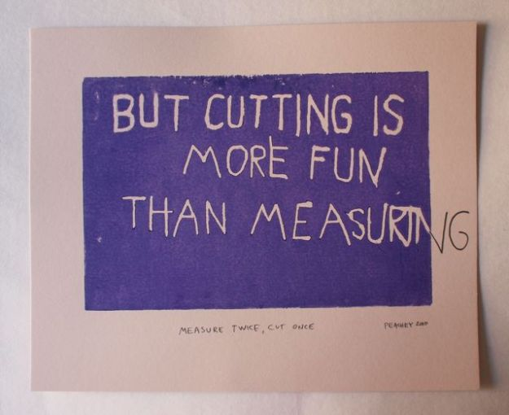

Repeated measures

Image: Jeff Peachey
In brief
Many psychological studies, both applied and experimental, make repeated measurements of some kind. Dealing with these with confidence is the focus of this option. In this first session on repeated measures data we introduce the idea of partitioning variance, and attributing it to different groupings in our data. We discuss how this is related to statistical power, and fit the same pre-post RCT data with Ancova and a ‘mixed’ model (but complete this exercise in the next session). At the end of this session you should be able to identify tradeoffs in sampling strategies for repeat measures studies and understand the drivers for dealing with repeat measures data with appropriate techniques.